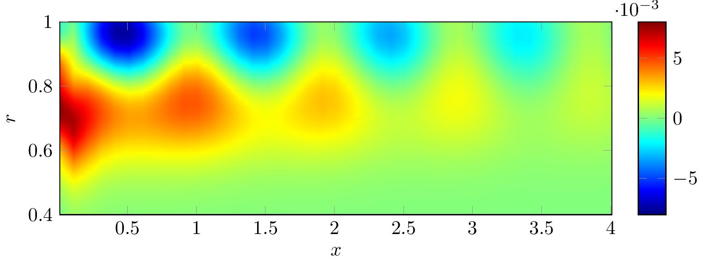
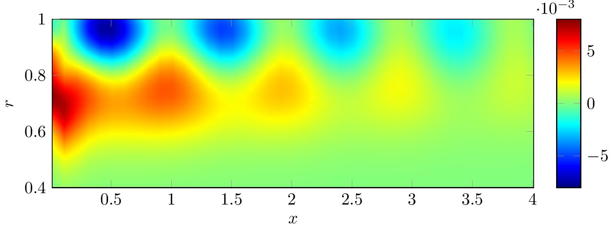

Major conferences and seminars
22nd AIAA/CEAS Aeroacoustics conference : "Asymptotic and numerical Green's function in a lined duct with realistic shear and swirl", Lyon, May 2016.
ISVR seminar (invited) : "Analytical and numerical Green's functions in an aeroengine", Southampton, February 2016.
Poster for TakeAIM (finalist) : "Mathematically modelling a jet engine", Oxford, November 2015. Poster
Osborne Reynolds Student Day : "Noise generation by turbulence interacting with an aerofoil with a serrated leading edge", Manchester, July 2015.
21st AIAA/CEAS Aeroacoustics conference : "Noise generation by turbulence interacting with an aerofoil with a serrated leading edge", Dallas, June 2015.
BMC/BAMC Conference : "Noise generation by turbulence interacting with an aerofoil with a serrated leading edge", Cambridge, April 2015.
Poster at SET for Britain 2015 : "Noise generation by Aircraft", House of Commons, March 2015. Poster
Other presentations
Waves group talk in February 2014, February 2015 and July 2016 (All Cambridge)
FETE Conference in July 2015 (Duxford)
CCA-MASDOC conference in March 2014 (Cambridge) and April 2015 (Warwick)
CAKE talk in April 2014 (Cambridge)
DAMTP 2nd Year Talks in April 2014 (Cambridge)
CCA Mini project presentations in January 2013 and May 2013 (Both Cambridge)


 


{kind=link}
{kind=link}
{kind=link}